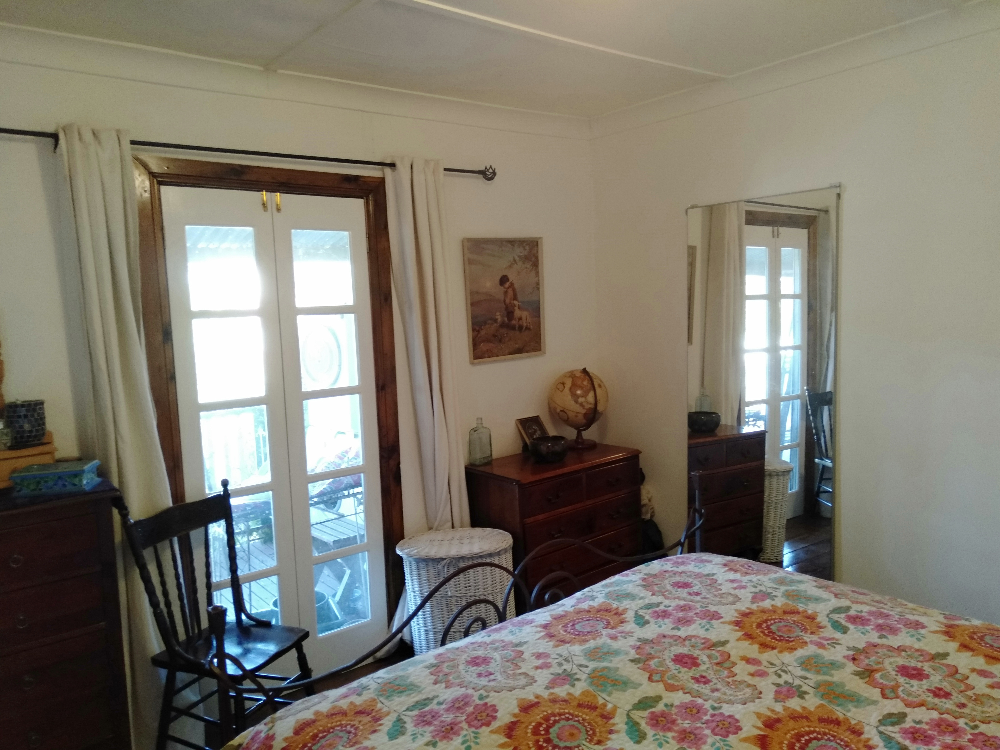

News for 2019
2018 2017 2016 2015 2014 2013 2012 2011 2010 2009 2008
Ripe Ark Nearing the End
19 Nov, 2019
We're selling up and moving to somewhere greener. These are the photos from the Gumtree ad:

________________________________________________
Goodbye 2018
February 8, 2019
2018 was not a good year for me. Something went wrong with my medication and I experienced the physical symptoms of depression for most of the year. (By "physical symptoms" I mean I was feeling tired, un-motivated and devoid of energy, but I wasn't having pessimistic thoughts or believing the world was a bad place). I seem to be on the mend now, but as you can see from the 2018page, I got very little done around the place.You hear wise people say that when you feel like you haven't achieved anything, try looking back at how things were before you started. Thanks to the magical power of the camera, it's possible to do just that, and here is a little of what I saw:
But the most gratifying achievement has been the evolution of the kitchen, which now has its very own page: